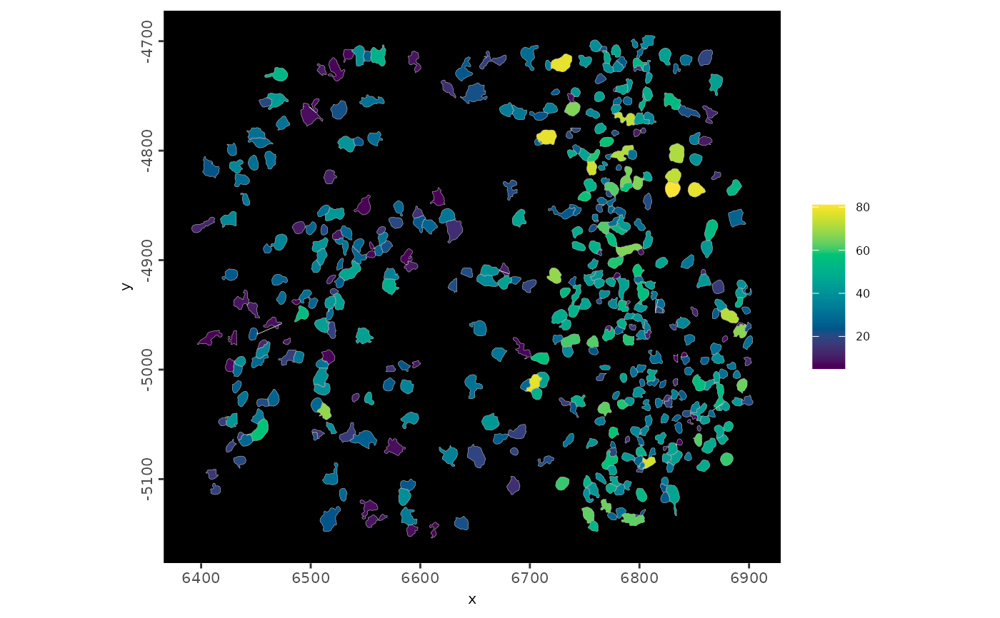
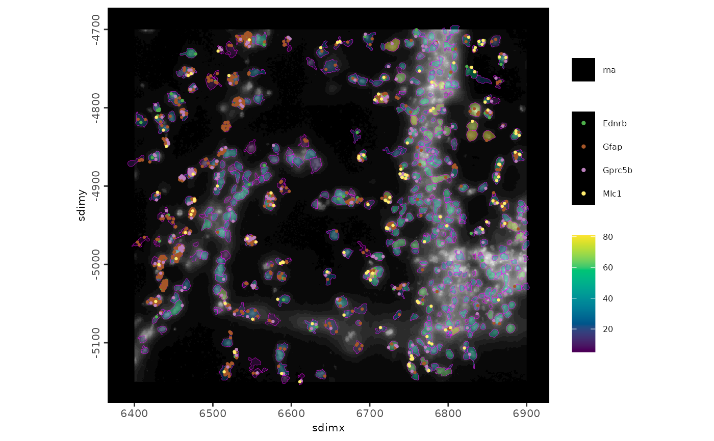
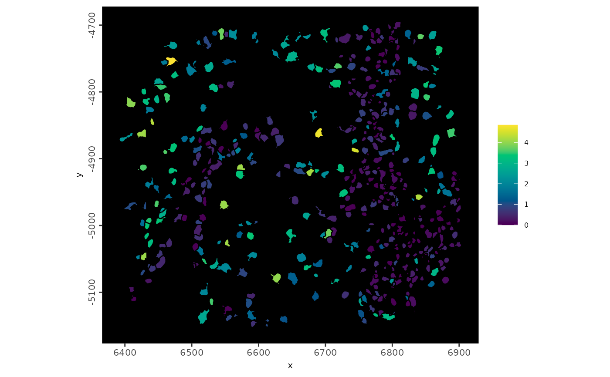
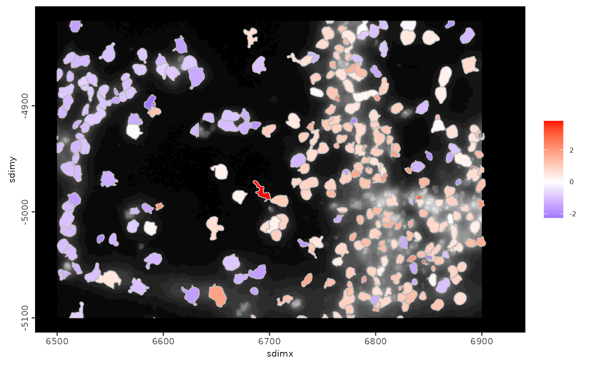

Function to plot multiple features for multiple modalities at the spatial in situ level
Usage
spatInSituPlotPoints(
gobject,
show_image = FALSE,
gimage = NULL,
image_name = NULL,
largeImage_name = NULL,
spat_unit = NULL,
spat_loc_name = NULL,
feats = NULL,
feat_type = "rna",
feats_color_code = NULL,
feat_shape_code = NULL,
sdimx = "x",
sdimy = "y",
xlim = NULL,
ylim = NULL,
remove_background_polygon = TRUE,
spat_enr_name = NULL,
point_size = 1.5,
stroke = 0.5,
expand_counts = FALSE,
count_info_column = "count",
jitter = c(0, 0),
show_polygon = TRUE,
use_overlap = TRUE,
polygon_feat_type = "cell",
polygon_color = "grey",
polygon_bg_color = "black",
polygon_fill = NULL,
polygon_fill_gradient = NULL,
polygon_fill_gradient_midpoint = NULL,
polygon_fill_gradient_style = c("divergent", "sequential"),
polygon_fill_as_factor = NULL,
polygon_fill_code = NULL,
polygon_alpha = NULL,
polygon_line_size = 0.4,
axis_text = 8,
axis_title = 8,
legend_text = 6,
coord_fix_ratio = 1,
background_color = "black",
show_legend = TRUE,
show_axes = NULL,
plot_method = c("ggplot", "scattermore", "scattermost"),
plot_last = c("polygons", "points"),
theme_param = list(),
show_plot = NULL,
return_plot = NULL,
save_plot = NULL,
save_param = list(),
default_save_name = "spatInSituPlotPoints",
verbose = TRUE,
...
)Arguments
- gobject
giotto object
- show_image
show a tissue background image
- gimage
a giotto image
- image_name
name of a giotto image or multiple images with group_by
- largeImage_name
deprecated
- spat_unit
spatial unit (e.g. "cell")
- spat_loc_name
name of spatial locations
- feats
named list of features to plot
- feat_type
feature types of the feats
- feats_color_code
code to color the provided features
- feat_shape_code
code to shape the provided feature types
- sdimx
spatial dimension x
- sdimy
spatial dimension y
- xlim
limits of x-scale (min/max vector)
- ylim
limits of y-scale (min/max vector)
- remove_background_polygon
logical (default =
TRUE).xlimandylimwhich work through (crop()) may sometimes produce extent-filling polygons when the original geometry is problematic or invalid. SetTRUEto remove these, based on whether a polygon fills up most of the x and y range.- point_size
size of the points
- stroke
stroke to apply to feature points
- expand_counts
expand feature coordinate counts (see details)
- count_info_column
column name with count information (if expand_counts = TRUE)
- jitter
numeric. Maximum x,y jitter provided as c(x, y) or a single number which will be recycled to length 2.
- show_polygon
overlay polygon information (e.g. cell shape)
- use_overlap
use polygon and feature coordinates overlap results
- polygon_feat_type
feature type associated with polygon information
- polygon_color
color for polygon border. Set
NAto remove border- polygon_bg_color
color for polygon background (overruled by polygon_fill)
- polygon_fill
character. what to color to fill polgyons by (e.g. metadata col or spatial enrichment col)
- polygon_fill_gradient
polygon fill gradient colors given in order from low to high
- polygon_fill_gradient_midpoint
value to set as gradient midpoint (optional). If left as
NULL, the median value detected will be chosen- polygon_fill_gradient_style
either 'divergent' (midpoint is used in color scaling) or 'sequential' (scaled based on data range)
- polygon_fill_as_factor
is fill color a factor
- polygon_fill_code
code to color the fill column
- polygon_alpha
alpha of polygon
- polygon_line_size
line width of the polygon's outline
- axis_text
axis text size
- axis_title
title text size
- legend_text
legend text size
- coord_fix_ratio
fix ratio of coordinates
- background_color
background color
- show_legend
show legend
- plot_method
method to plot points
- plot_last
which layer to show on top of plot, polygons (default) or points.
- theme_param
list of additional params passed to
ggplot2::theme()- show_plot
logical. show plot
- return_plot
logical. return ggplot object
- save_plot
logical. save the plot
- save_param
list of saving parameters, see
showSaveParameters- default_save_name
default save name for saving, don't change, change save_name in save_param
- verbose
be verbose
- ...
additional params to pass to
GiottoClass::spatValues()
See also
Other In Situ visualizations:
spatInSituPlotDensity(),
spatInSituPlotHex()
Examples
g <- GiottoData::loadGiottoMini("vizgen")
#> 1. read Giotto object
#> 2. read Giotto feature information
#> 3. read Giotto spatial information
#> 3.1 read Giotto spatial shape information
#> 3.2 read Giotto spatial centroid information
#> 3.3 read Giotto spatial overlap information
#> 4. read Giotto image information
#> python already initialized in this session
#> active environment : '/usr/bin/python3'
#> python version : 3.12
# plot the number detected features in the `giotto` object.
spatInSituPlotPoints(g,
polygon_feat_type = "aggregate",
polygon_fill = "nr_feats",
polygon_fill_as_factor = FALSE,
polygon_fill_gradient_style = "sequential",
polygon_line_size = 0.1,
polygon_alpha = 1
)
#> plot polygon layer done

# plot the same as above, but with the first 4 rna features plotted as
# detection points. Also add in the background and change the polygon
# alpha and border color
spatInSituPlotPoints(g,
polygon_feat_type = "aggregate",
polygon_fill = "nr_feats",
polygon_fill_as_factor = FALSE,
polygon_fill_gradient_style = "sequential",
polygon_line_size = 0.1,
polygon_alpha = 0.4,
polygon_color = "magenta",
feats = list("rna" = GiottoClass::featIDs(g)[1:4]),
point_size = 0.8,
plot_last = "points",
show_image = TRUE,
image_name = "dapi_z0"
)
#> plot image layer done
#> plot polygon layer done
#> --| Plotting 1360 feature points
#> plot feature points layer done

# plot with spatial enrichment information
spatInSituPlotPoints(g,
polygon_feat_type = "aggregate",
spat_enr_name = "cluster_metagene",
polygon_fill = "1",
polygon_fill_as_factor = FALSE,
polygon_fill_gradient_style = "sequential",
polygon_alpha = 1
)
#> Getting values from [aggregate][rna][cluster_metagene] spatial enrichment
#> plot polygon layer done

# plot with xlim,ylim and feature expression
spatInSituPlotPoints(g,
polygon_feat_type = "aggregate",
xlim = c(6500, 6920),
ylim = c(-5100, -4820),
polygon_alpha = 1,
polygon_fill = "Slc17a7",
polygon_fill_gradient_midpoint = 0,
expression_values = "scaled",
show_image = TRUE
)
#> plot image layer done
#> Getting values from [aggregate][rna][scaled] expression
#> plot polygon layer done
